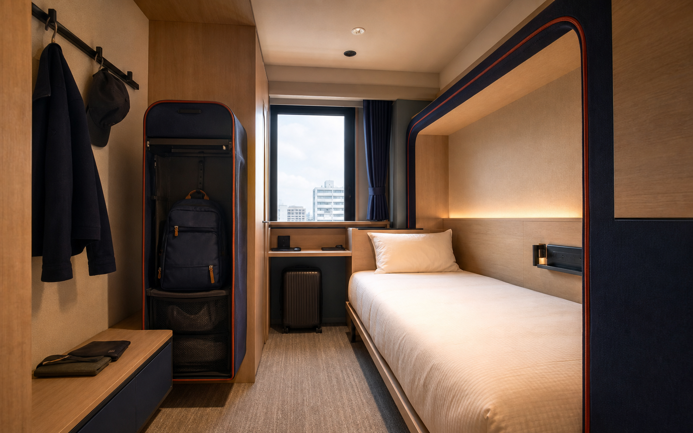
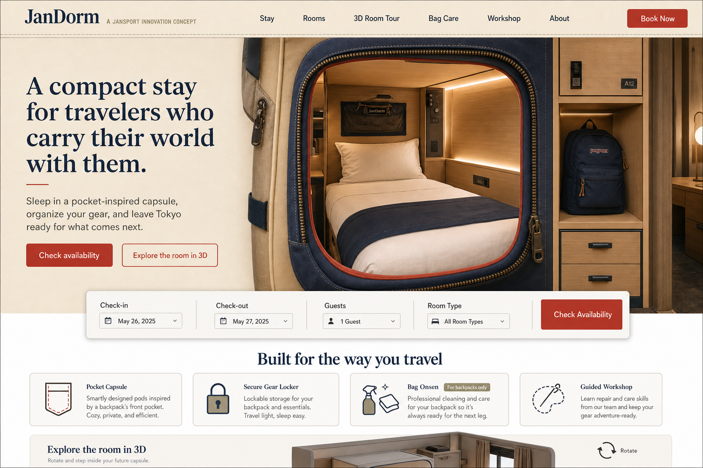

Quiet sleep zones
静かな睡眠エリア
Warm lighting, privacy screens, ventilation, and clear quiet-hour rules.
落ち着いた照明、プライバシースクリーン、換気、明確な静音ルール。
TOKYO · SHINJUKU / 東京・新宿
世界を背負って旅する人のための、コンパクトな滞在。
Sleep in a pocket-inspired capsule, organize your gear, and leave Tokyo ready for what comes next.
ポケットを思わせるカプセルで休み、旅の道具を整え、次の目的地へ。
QUICK SEARCH / クイック検索
01 · STAY / 宿泊
しっかり休んで、次の旅へ。
JanDorm combines the calm efficiency of a Japanese capsule hotel with practical spaces made for people traveling with a backpack.
日本のカプセルホテルの機能性と、バックパッカーに必要な実用的な空間をひとつに。
静かな睡眠エリア
Warm lighting, privacy screens, ventilation, and clear quiet-hour rules.
落ち着いた照明、プライバシースクリーン、換気、明確な静音ルール。
バックパック対応収納
A lockable compartment keeps your backpack and valuables organized beside you.
バックパックと貴重品を、手の届く専用ロッカーに整理して収納。
旅人のための設備
Charging, packing surfaces, shared showers, Wi-Fi, and multilingual support.
充電、パッキング台、共用シャワー、Wi-Fi、多言語サポート。
02 · ROOMS / 客室
自分に合うポケットを選ぶ。
SINGLE / 1名
ポケットカプセル
A private sleep pod with an integrated backpack shelf, charging ledge, reading light, and privacy screen.
バックパック棚、充電スペース、読書灯、プライバシースクリーンを備えた睡眠ポッド。

More space / 広めSINGLE / 1名
ウィンドウポケット
A wider capsule with daylight, a standing packing area, and additional hanging space for travel layers.
自然光、立ったまま使えるパッキングスペース、衣類用フックを備えた広めの客室。

ROOM TOUR / 客室ツアー
到着前に、客室の広さと設備を確認。
The interactive 3D scan is not available yet. This placeholder shows where guests will later rotate the room, open the locker, and check exact dimensions.
インタラクティブ3Dスキャンは現在準備中です。完成後は、客室の回転表示、ロッカーの開閉、正確な寸法確認ができます。
03 · BAG CARE / バッグケア
バッグオンセンは、バックパック専用ケア。
While you rest, trained staff clean the exterior, sanitize contact areas, deodorize, dry safely, and inspect common wear points.
お休みの間に、専門スタッフが表面洗浄、接触部の除菌、消臭、安全乾燥、摩耗点検を行います。
04 · WORKSHOP / ワークショップ
直して、学んで、旅を続ける。
Join a small instructor-led session to repair or customize your backpack using inspected new or recycled JanSport-compatible parts.
少人数制のガイド付きセッションで、検査済みの新品・再利用パーツを使い、バッグを修理・カスタマイズします。
05 · ABOUT / 私たちについて
旅を支えるギアから考えた宿。
JanDorm is a JanSport innovation concept for independent travelers in Tokyo. It connects a dependable night’s rest with practical backpack care and repair knowledge.
JanDormは、東京を旅する人のためのJanSportイノベーションコンセプトです。安心して休める宿泊体験と、実用的なバッグケア、修理の学びをつなぎます。
Rather than asking travelers to replace gear at the first sign of wear, JanDorm helps them understand, maintain, and continue using what already carries their story.
傷んだらすぐ買い替えるのではなく、旅の思い出を運んできた道具を理解し、手入れし、使い続けることを支えます。
YOUR NEXT STOP / 次の目的地
今夜は休み、明日はまた旅を続けよう。
Plan your JanDorm stayJanDormの滞在を計画